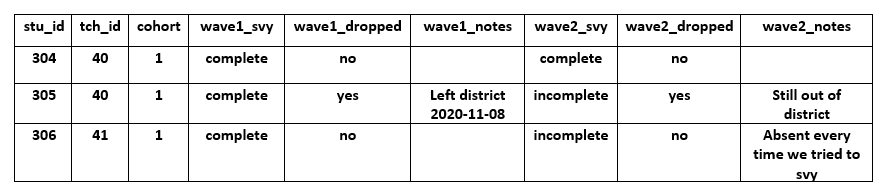

In this training we continue to cover establishing systems that help make a project successful. These structures are the backbone of your project and without these structures in place, it can create many, many headaches for project staff, and may even make your data unusable.
If you are collecting your own original data as part of your study, for example a randomized controlled trial study, a data management plan should be interwoven throughout your data collection process. If this does not happen, it creates many headaches for data managers, as well as coordinators and PIs when it comes time to actually work with the data. We will discuss the role of data management in data collection design, tracking of participants and data collection, as well as data storage and security. We will not go in to the ins and outs of project management, including things such as recruiting participants, consenting participants, training data collectors, or scheduling data collection as those are less tied to data management and more aligned with project coordination. However, I will note that it is important to work with your data manager on the language used in your consent form. If you plan to share your data upon conclusion of your project, either via a repository or your own data request system, will you want to make sure your consent has clear language about your intent to share your de-identified data (Within & Between podcast and University of Pittsburgh).
Before any project begins, all data collection instruments and protocol must be submitted to an Institutional Review Board (IRB) for approval. The IRB, a formal organization designated to review and monitor human participant research, ensures that the welfare, rights, and privacy of research participants are maintained throughout the project. Some of the systems we cover throughout this series will be vetted by an IRB (ex: original data collection), others will not (ex: documentation, style guide). This training will not be covering the ins and outs of the IRB, but we just wanted to note that while this training provides many suggestions for setting up your data collection systems, you still must always have required forms approved by IRB before moving forward with original data collection.
Data Collection
When it comes to the intersection of data management and data collection, there is a lot to consider. If at all possible, take some planning time to create data collection instruments and procedures that keep your data secure, valid, minimize errors, and relieve future data cleaning headaches.
Quick note: Everything you read below is from my personal experience as well as a summary of what I have heard while interviewing other researchers. As such I may be missing out on even better ways to set up these systems. I am open to feedback!
Data Collection Instruments
Electronic Data
Research teams may be restricted in how they collect their data due to limited resources, research design, or even the population being studied. However, if at all possible, I highly recommend collecting data electronically rather than manually. And by electronically, I mean collecting on an instrument that directly feeds into a database that you can then download at a later point, rather than hand entering the data into a database. The reasons are:
- Forms are easier to maintain/update
- More efficient than manually entering or manually scoring data (including TeleForm)
- It reduces errors in both data collection as well as data entry/scoring
- Can reduce missing data
- Quick turnaround of clean data
- Removes the need to physically store paper data
- Allows for assigning correct variable names, value codes, and labels within the form
I will say one downside we have come across is, if your electronic data requires internet connection, this can cause issues when there is either no or poor service in your data collection area.
Data that can be collected using technology includes things such as:
- Electronically collected consents/assents vs paper forms
- Surveys using an online platform or mobile app as opposed to paper
- Electronically administered assessments as opposed to manually given assessments
- Observation data collected on a tablet or phone rather than paper
And obviously, some data is collected/accessed digitally automatically:
- User analytics data
- Publicly available data (such as your state Dept of Education)
Not all data is better collected digitally verses manually. For instance, using software to translate your interview data rather than transcribing by hand has its pros (efficiency) and cons (mis-translations that need to be fixed). As always, do what makes the most sense for your project and whatever is approved by your Institutional Review Board.
Last, I don’t want to endorse any particular survey platform or assessment company for data collection. However, when choosing tools to use, you should a) make sure the system meets the needs of your project (ex: the assessment measures what you intend to measure) and b) to ensure security of your data, use software that is vetted and approved by your institution.
Note: With the COVID-19 pandemic in 2020, I think many of us doing education research have had to make a huge switch, very quickly, to collecting data electronically and remotely. I mention this to point out that this is yet another reason to consider creating electronic data collection instruments, to prepare for the unknown, and provide flexibility to collect data even when you aren’t able to physically be in schools. It is much easier to print out an electronic survey in pdf form and implement the survey manually if needed than it is to build a paper survey into an electronic platform to have it sent out quickly.
Setting up Electronic Surveys
- One of the best reasons to develop an electronic survey rather than paper, is the ability to minimize errors and to reduce data cleaning burden
- First and foremost, take time to think how will your data be translated into a database? Remember, every variable you create, and every answer that is given, is then stored in a database within the survey platform that you will later download to a file. Here are several suggestions to adhere to when creating your survey (While I will not provide a tutorial for how to implement each suggestion, they are all possible in a platform such as Qualtrics):
- Name all your survey items the correct item name from your data dictionary (Ex: Rename the Qualtrics default Q1 to toca1)
- This isn’t a name that your survey participants will see, but it is the variable name you will see when you download your data
- Code all values as they are in your data dictionary (Ex: 1=Strongly Agree, 2= Agree, etc.)
- In Qualtrics you can do this using the “recode values” option
- Use data validation
- Make GPA a numeric only field (restrict the number of digits)
- Make birth date a date only field
- Use a drop-down list rather than open-ended field
- School Name as a drop-down removes the potential for people to enter school names differently (“South Middle School”, “South Middle”, “SOUTH”, “Soth Mid”)
- Only ask for one piece of information per question
- Don’t ask: Please list your ACT or SAT score.
- Do ask: Please list your ACT score. Please list your SAT score. In separate questions.
- Make your question wording abundantly clear
- Don’t ask: Are you from this county?
- Do ask: Do you currently live in this county?
- Make the question format the same across studies. Similar to keeping a variable name the same across studies, it’s best practice to keep the question format the same across a study.
- If anxiety_per was a slider question, on a scale from 1-10, with one point increments in a previous study, build this question the same way in the next study
- Do make your response options clear in the question
- Don’t ask: Which parent are you? (m/f)
- Do ask: Which parent are you? (mother/father/other)
- If you are unsure if what you have created is going to download the way you want it to, make some sample data! Send the survey to a few staff members and have them take the survey using a “test” name. Then you can download the sample data and see if it looks the way you expect it to. You can always remove this test data either within the survey platform itself or delete it during your cleaning process. And yes, even with the most well-planned electronic survey design, there will still be some data cleaning after it is downloaded.
- Sending your survey out to staff to test also is a great opportunity to get feedback! Was there any language that was unclear? Did you forget some skip logic? Did you leave off an option or maybe an entire question? Get this feedback early as it is very difficult to make changes mid-project!
Setting up other electronic data collection systems
I am lumping everything else into one category because I think we can get lost in the weeds here. There are many different assessments, observations systems, decibel systems, etc., that people use to collect data and I don’t want to go through options for every possible system. But I do want to point out a few catch all things you can do when setting up these other systems.
- If your assessment or observation is generally a paper form (which luckily I would say most assessment systems are moving towards being online now), and it is your staff that are collecting the data, consider converting it to electronic.You can do that in several ways:
- Convert the form to an online survey platform, such as a Qualtrics survey
- If you do this, set it up using the same recommendations in the previous section on setting up electronic surveys (ex: back end coding to match the actual values on the forms, back end naming variables correctly, etc.)
- If you won’t have an internet connection in the field, consider making a form that still connects to or creates some type of database. This does not have to be high-tech. It could simply be:
- An excel file that is pre-built with every field available and the options for each field are limited to only the correct options through a drop-down list.
- Create an Access form that is connected to a database
- I’m sure there are many other tools out there that do similar things or you can build your own app that stores the data securely
- Some survey platforms (including Qualtrics) allow you to create a survey online and administer it using an offline survey app on your phone or computer that collects data and then uploads that data back to the survey platform once you have an internet connection again.
- Last, while this training isn’t about consents and assents, I will say it is very easy now, as long as you have IRB approval, to move your old paper consents and assents, to either an online survey platform, or a secure app like DocuSign, as long as your participants have access to the internet or email.
- Converting your observation or assessment to an online survey platform is an excellent option for collecting your data electronically, especially when you plan to have an internet connection. You can simply have data collectors use their phones, a tablet or laptop to collect data and as the project coordinator or data manager, you can access the data seamlessly through the survey platform at any time. It becomes trickier when you are having people use other tools that aren’t connected (such as an excel file or the Access file). When you use a survey platform, everyone’s data is feeding into the same database. When you are using excel or Access and you are not connected to the internet, everyone is storing data on their own device. This requires you to set up a way for collectors to share files (ex: Dropbox, Box, or whatever your institution deems is a secure system) and then for you to merge those files together across data collectors. It is definitely trickier, although possibly still a more efficient and reliable method that paper forms and hand entry of data.
Manually collected data
As I mentioned earlier, electronic data collection may not be possible and/or it may not be the best option for your project. If you must collect manual data I recommend the following to reduce error:
- Have very clear instructions/training on how to complete the form, and checking for missing data in the field
- Check all forms for missing data when they return back to the office
- Consider using something like TeleForm
- I personally have not used this but I know TeleForm designs machine readable forms that can later be scanned rather than hand entered
- If staff are hand entering data into a database (rather than using teleform)
- Set up clear databases for staff to enter the data
- Restrict entry in fields (only allow numeric values if you want staff to enter numbers rather than the actual words associated with response options)
- Have very clear instructions for data entry, including what they should do if they come across missing data (skip the cell, enter a certain number such as -999, etc.)
- Set up a system for error checking
- Consider double entering either all or a percentage of your data and running a syntax to check for errors (we will discuss this more in later trainings)
Maintaining Privacy in the Field
Researchers are always balancing participant confidentiality with maintaining accurate data. IRB maintains that participants should not know their Study IDs and you should never have a document that has both participant name and Study ID on the same form.
Some ideas to handle participants IDs in data collection are the following:
For electronic data:
- When sending out electronic surveys/assessments to participants, here are a few options (this is not all-inclusive):
- Send individual links to participants (where each survey link is connected to a Study ID within the system). This can usually be done easily in a survey platform using a “panel”.
- Send one link to all participants and assign all participants a second ID to enter into the survey. That ID is linked to the Study ID in a project secure database. When the data is downloaded, a data manager will need to link Study ID to the second ID.
- Send one link out to all participants and have each participant enter their name. This is the toughest out of all the options in terms of data management and privacy. When the data is downloaded the Study ID must be linked based on participant name and participant name promptly deleted (to remove all identifying information) and oftentimes participants may not record their name exactly as it is in your tracking database.
- Similar methods can be used for other electronic data collection such as observations done on tablets or phones.
- Also, make sure your data collection device (phone, tablet, laptop) is password secured and never left open and unattended.
For manual data:
- Most likely when you take paper forms into the field you will want participant names on them. If this is the case you can consider doing the following to link those names to IDs at a later time:
- Write the participant ID on the form and then use a removable label with participant name and place that over the ID. That way the participant never sees the ID, and when you return to the office, you can remove the name label, shred it, and be left with only the ID on the form.
- Write the name on the form, and when the form returns to the office, use a black permanent marker to black out the name and then write the ID on the form before entry. I like this less, because there is still a chance you will be able to see the name through the marker.
- If you need the name in the field, but you also need the ID in the field (say to enter into an electronic data collection app) then consider having one sheet with names with a double ID (such as 1,2,3,4) and another sheet or list on your phone that connects the double ID (1,2,3,4) to their study IDs.
- Also, make sure all paper forms are kept in a folder with you at all times in the field and they are promptly returned to the office and stored according to your IRB security rules, typically behind two locked doors (ex: in a locked room, in a locked file cabinet).
- None of these are real high-tech data security methods. This is why I continue to prefer electronic data collection if at all possible.
Resources:
üìë University of Guelph
Tracking
There are so many pieces of information to track for a research study including:
- Consent and assents
- Participant information
- Incentives/Payments
- Data collection completion
- Participant movement
And all of these needs to be tracked across time and space (such as classrooms and sites). Much like data collection, tracking is mostly handled by the project coordinator, however, it is extremely helpful to consult with a data manager when setting up these systems to make sure you include all relevant pieces and to make sure the database is understandable when it comes time to work with the data. Not only is a thorough and complete tracking database vital to ensuring you collect all of your data, it is also vital to project coordination, consort diagram creation, and final dataset verification. At some point, a data manager will use a tracking database to confirm that the N they have in their clean datasets match the N in a tracking database and it is crucial that tracking is complete and easy to understand.
Creating a tracking database
A tracking database (sometimes called a master list because it contains data that links your assigned participant IDs to their identifiable information) can be set up in an software or app such as:
- Access
- Excel
- QuickBase
- RedCap
- Salesforce
- Qualtrics
- A SQL database
The possibilities really are endless and it all depends on what your team has access to and how tech-savvy your team is. Some systems require specific programming knowledge (ex: setting up a SQL database). It really doesn’t matter too much but I will save I very much prefer using a relational database system, that is something that allows relating tables to one another, eliminating redundant data. Without getting too technical, database normalization increases performance, decreases storage, it makes it much easier to make updates to tables as changes occur.
Consider this first structure, with 3 very simple tables (a student table, a teacher table, and a school table). Each table has a primary key that makes individuals within that table unique and each table can be connected through a foreign key. For example in the student table, the primary key is studentid and the foreign key is teacherid which connects students to the teacher table. Using a query language (such as SQL) in systems such as Access, QuickBase and others, we can pull multiple tables together ad hoc to make a table with all the pieces of information we need.

Now consider these 3 tables that are not relational (such as 3 tabs in an excel sheet). Since we are unable to set up a system that links these tables together, we need to enter redundant information into each table in order to see that information within each table without having to flip back and forth across tables to find the information we need.

Using this relational structure allows us to eliminate redundant data. This not only saves us time and energy but reduces errors as well. You can imagine how useful that is.
- You don’t have to type things like teacher name and school name over and over for every student in the student table.
- When a teacher changes their last name, you don’t have to go back to the student table and update that last name for all of their students.
üìë Database vs.¬†Spreadsheet
When setting up your tables consider the following:
- Create one table per entity (entities being participants, sites, districts, etc.)
- Student table, Teacher table, School table, District table
- Consider how you want to track data over time
- Do you want to track longitudinal data all in the same table or make a different for each time period?
- I have no preference here. It is more streamlined to keep all time points in the same table, but I think for some people it can be overwhelming to have fall, winter and spring all tracked in the same table
- Make sure to include both primary and foreign keys in all tables
Other preferences for a tracking system include:
- One that restricts entry values to reduce error (only allow yes/no for a field, or a drop-down list of school names)
- A system with versioning as you will be constantly updating and adding to your tracking system and there may be times when you need to check an older version
- A system that allows querying of data (pull tables of information as needed such as rosters, or % completion per classroom)
- One that easily allows export of data if you need to print rosters or print labels, etc.
Fields to include in your tracking database
Fields to consider tracking in your database at the beginning of your study include:
- Participant/Study/Location ID (Primary ID)
- Participant/Site name
- Contact information
- Other IDs necessary for linking data (such as a Student ID for linking school records)
- Relevant study demographics (date of birth, grade level, gender)
- Schedule information needed for the study (block, class time)
- Consent/Assent received
- Randomization info (cohort, group)
Fields to track over time (for each period you collect data):
- Data collected (for each unique piece of data)
- Observation collected (yes/no)
- Interview collected (yes/no)
- Survey collected (yes/no)
- Movement (ex: track if a student moved out of the school during fall data collection)
- Notes (ex: this is where you can write the details of movement for instance)
- Payment/Incentives provided
- Other optional pieces to collect:
- Attempts to collect data
- Communication with the participant
- Dates data collection completed
Example of a very simplified student table:

Last, this may not go into your data collection tracking in order to keep individuals such as project coordinators blinded to treatment condition, but if your study is an RCT, you will also want to keep randomization information tracked as well so that information can be added to your analysis data at a later time.
Quick thought: Assigning IDs
As you recruit and consent participants, you will add these participants to a tracking database under an assigned unique ID (UID). I also referred to this as primary ID above. These IDs allow participants to remain confidential in your data. That ID (typically a 2-6 digit random numeric or alphanumeric value) will follow that individual throughout the life of the study and should be unique to that individual. This number never changes (Example: stu_uid).
Additionally, depending on your study design, some participants may have the opportunity to be re-recruited into the study more than once. If this is the case, you will need another ID, in addition to a UID, that defines that participant record as a unique row in your data. You will want to create a study/participant ID for that person that is associated with the data collected for that recruitment period (a row record id). Every PI has their own method for creating this ID scheme, but it is typically a combination of a few pieces of information that make that case/record/row unique, while still accounting for the UID.
Example of this kind of ID (1205094).
Although data storage is our next topic, I want to mention right now, that this tracking database clearly has identifiable and protected information. Therefore it should be stored securely and apart from all other study data. This is the only file that directly links your participants’ true identity to your de-identified study data and it should never be stored in the same folder as your study data. Additionally, it should have limited access. Only those who need access, such as the project coordinator and data manager, should have access to this file for security purposes.
Resources:
üìë University of Guelph
Data Storage
Whether you are working with your own original collected data, or you are working with data provided to you from an entity such as a school district, or you are working with publicly available data, you need to consider secure data storage.
In general you will most likely be working with one of three types of data and will need to store your data according to the type of data:
- Anonymous data (Data at no time has ever had identifying information tied to it and can never be linked back to an individual)
- Confidential data (Identifying information has been replaced with a code and the only way to link the data back to an individual is through that code. Identifiers are stored separate from the research data.)
- De-identified data (Data is considered de-identified when all direct and indirect identifiers are removed and destroyed and their is no longer a link to a participant’s identity; i.e., all identifying information is replaced with a code and all tracking databases/master lists are destroyed at the conclusion of a study)
- Identifiable data (Data that includes personally identifiable information (PII) such as name, date of birth, or email)
Storing your tracking database
Because your tracking database/master list contains identifiable information about your participants, this data must have the highest security. The specifics of this security will be set by your university or institution. However, the general rules for storing this type of data is:
- They should be stored separately from your de-identified data
- This data should have limited access (only available to the few individuals who actually need to interact with this data)
- It should be stored only on a university/institution sponsored shared network and not in a cloud environment or a portable device
Storing your study data files
Your study data should all be de-identified, only including study IDs, no names. However, there are still some security precautions you should take.
- Limit access to your data folder to only those who need to work with the data. This ensures no one intentionally or unintentionally makes changes to your data.
- Have a data backup policy
Storing your paper data
- Your paper data should be de-identified. As I mentioned earlier in this training, a typical IRB rule is to store paper data behind two locked doors for security. This typically mean
Sharing Data
The biggest rule for sharing data is to never send confidential or identifiable information via email. Use secure data transmission channels to send data such as Boxcryptor.
Other data security
A newer type of data collection is occurring since the COVID-19 pandemic, and that is observations, interviews and so forth occurring via video conferencing. Again, you will want to refer to your specific institution guidelines, but generally:
- You will want to use approved software that is licensed by your Institution
- You will want to make sure that software is HIPPA-compliant if you need it to be
- If recording the session, make sure that occurs in a secure location and that participants are notified that the session is being recorded
- Sessions are stored on an Institution approved cloud service or managed service
General security rules
I am not an IT professional, but some general security rules to keep in mind for all data and devices are:
- Password protect your devices (with strong passwords)
- Never leave them open and unattended
- Don’t send confidential data via email
- Keep your virus protection up to date
- Encrypt any identifiable data on portable devices
- If any identifiable information is collected, promptly replace it with study IDs and delete/destroy identifiable information as soon as possible after data collection
- Only provide access to those who need access to your data, and remove access when people are no longer affiliated with your institution or the study
- Consider having staff review and sign a data responsibility agreement that discusses the ways they will work with the data ethically, responsibly, and securely
Resources:
üìë University of Guelph üìë University of Pittsburgh üìë University of Michigan
Directory Structure
## levelName
## 1 project
## 2 ¦--documentation
## 3 ¦--measures
## 4 ¦ ¦--student_measures
## 5 ¦ °--teacher_measures
## 6 °--data
## 7 °--cohort
## 8 °--time
## 9 ¦--raw
## 10 ¦--syntax
## 11 °--clean